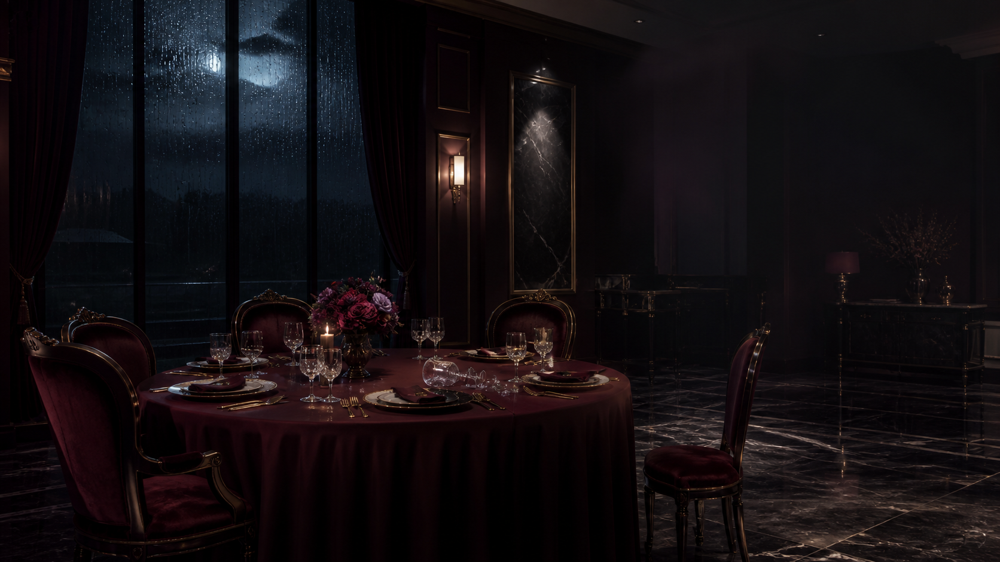

4명 · 약 90분
저택 살인사건
축하의 밤, 안주인이 숨을 거두었다.
축하의 밤, 안주인이 숨을 거두었다.
- 인원
- 4명
- 시간
- 90분
- 진행
- 앱
휴대폰으로 입장해주세요
한 사람씩 서로 다른 QR을 찍어주세요.
한 번의 조사 시간에 몇 장씩 찾을까요?
PROLOGUE
재생 대기
남은 시간
00:00
시간이 끝났어요. 1분 더 쓰거나 다음 단계로 넘어가세요.
자세한 방법 보기
ALL VOTES ARE IN
모든 투표가 끝났습니다
여러분의 선택은 정해졌습니다.
이제 그날 저녁 실제로 무슨 일이 있었는지 확인합니다.
한 번 열면 되돌릴 수 없습니다
재생 대기